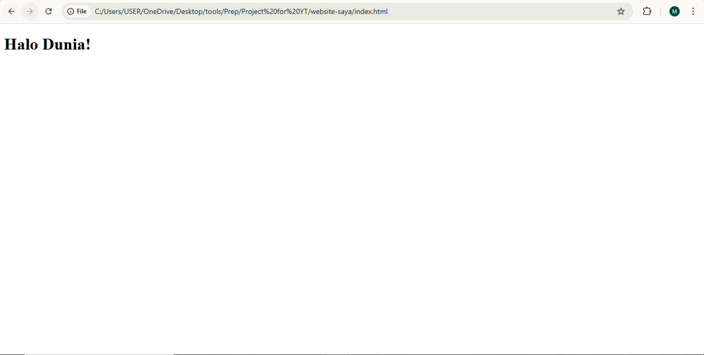
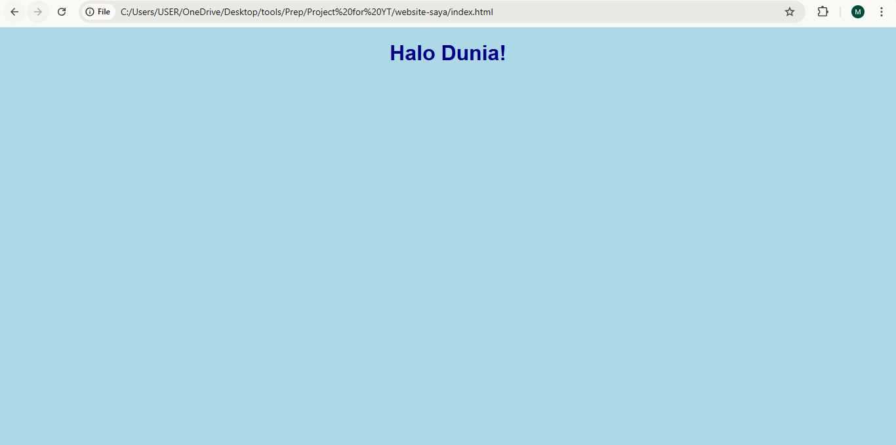
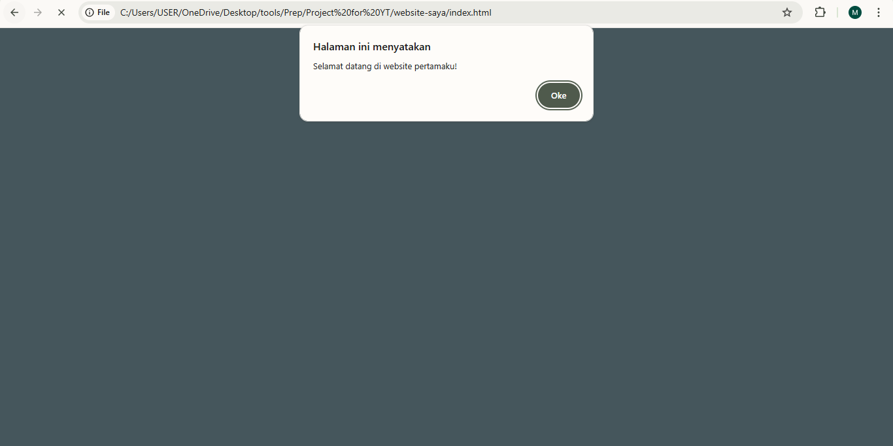

.svg)
Cara Membuat Website Sederhana
1. Persiapan Awal
Sebelum membuat website, pastikan kamu sudah memiliki
text editor seperti VS Code dan
web browser seperti Chrome. Buat satu folder khusus
untuk proyekmu, misalnya website-saya, lalu buat tiga
file utama:
index.html→ Struktur dasar halamanstyle.css→ Desain tampilanscript.js→ Interaksi dan logika

2. Membuat Struktur Dasar Website
File index.html berisi kerangka utama dari website.
Berikut contoh sederhana:
<!DOCTYPE html>
<html lang="id">
<head>
<meta charset="UTF-8">
<meta name="viewport" content="width=device-width, initial-scale=1.0">
<title>Website Pertamaku</title>
<link rel="stylesheet" href="style.css">
</head>
<body>
<h1>Halo Dunia!</h1>
<script src="script.js"></script>
</body>
</html>

3. Menambahkan Style (CSS)
File style.css digunakan untuk mempercantik tampilan web.
Contohnya:
body {
background-color: lightblue;
font-family: Arial, sans-serif;
text-align: center;
}
h1 {
color: darkblue;
}

4. Menambahkan Interaktivitas (JavaScript)
Tambahkan script.js untuk membuat website lebih
interaktif. Misalnya menampilkan pesan saat halaman dibuka:
alert("Selamat datang di website pertamaku!");
